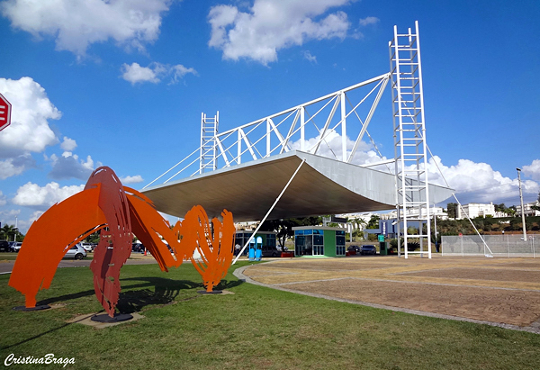

PARQUE DA CIDADE
Inaugurado em 2.004, o moderno Parque da Cidade fica às margens da represa que abastece Jundiaí, e é um dos mais visitados pela população jundiaiense.
Com 500.000 m², oferece áreas para piquenique, caminhadas ecológicas, leitura e diversão. Conta com duas pistas de cooper de 2,1 quilômetros cada, aparelhos de ginástica, bebedouros, sistema de som e duchas.
O local conta, também, com jardim japonês, anfiteatro ao ar livre e áreas para apresentações artísticas. Há ainda parque de diversões, mesas de jogos (xadrez, damas e dominó), quadras poliesportivas, futebol de areia, trilhas e um pier para pequenas embarcações.
Não é permitida a entrada de animais domésticos, o estacionamento e a entrada são gratuitos e o espaço é adaptado para portadores de necessidades especiais.
- Endereço: Endereço: Rodovia João Cereser, km 66 – Pinheirinho
- Telefone: ((11) 4522-0766 / 4522-0499
- E-mail: parquedacidade@daejundiai.com.br
- Site: www.parquedacidade.jundiai.sp.gov.br
- Horário de Funcionamento: Diariamente das 7h às 17h.
- Facebook: Facebook
PARQUE DA CIDADE
O Jardim Botânico Jundiaí está localizado no Endereço: Rodovia João Cereser, km 66 – Pinheirinho.